Itatest Phase 3
Public website & authentication
87 selected rendered images · 32 matched pairs · light/dark · mobile/desktop
Phase 2 was visually approved. Phase 3 is delivered for review; Phase 4 has not begun. These are actual browser renders, not generated mockups. Main comparisons use existing isolated local preview responses; callback recovery has no valid proof. Injected failures and synthetic Google SDK/API states are explicitly labeled. There is no password-recovery flow to demonstrate.
Before & after
home light 390 — actual local page
home light 1440 — actual local page
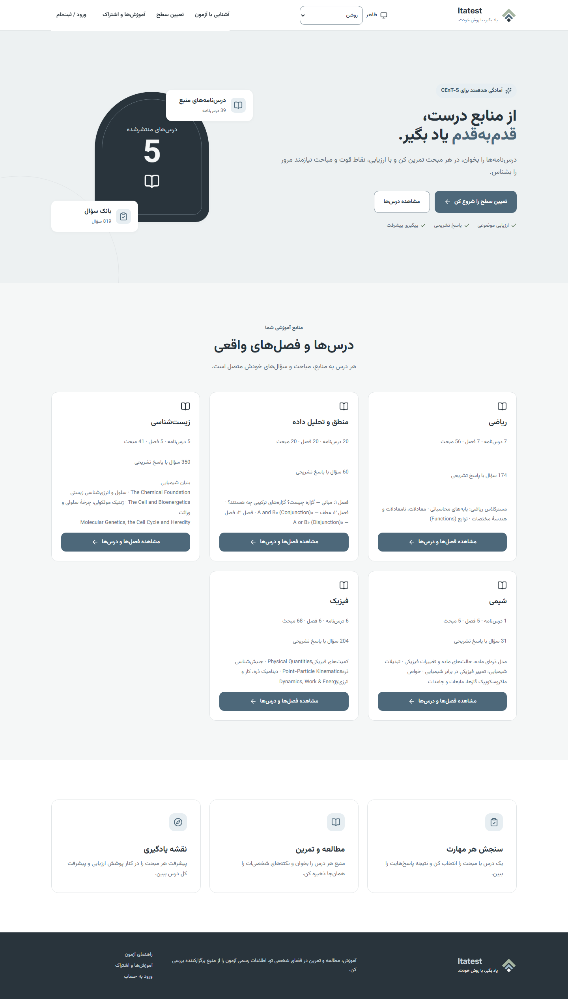
Before — / · light · 1440px After — / · light · 1440px
After — / · light · 1440pxhome dark 390 — actual local page
home dark 1440 — actual local page
exam light 390 — actual local page
exam light 1440 — actual local page
exam dark 390 — actual local page
exam dark 1440 — actual local page
intro light 390 — actual local page
intro light 1440 — actual local page
intro dark 390 — actual local page
intro dark 1440 — actual local page
course light 390 — actual local page
course light 1440 — actual local page
 Before — /courses/math · light · 1440px
Before — /courses/math · light · 1440px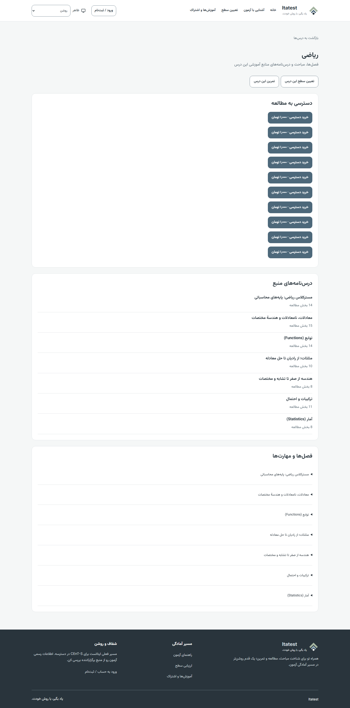
After — /courses/math · light · 1440pxcourse dark 390 — actual local page
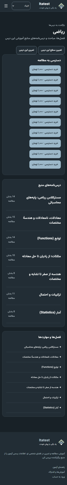
Before — /courses/math · dark · 390pxAfter — /courses/math · dark · 390pxcourse dark 1440 — actual local page
login light 390 — actual local page
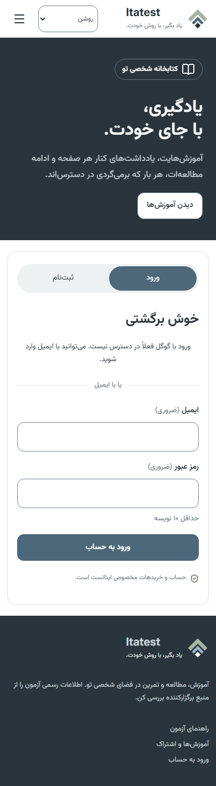
Before — /login · light · 390px After — /login · light · 390px
After — /login · light · 390pxlogin light 1440 — actual local page
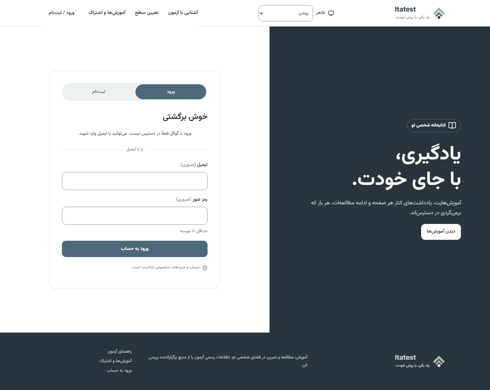
Before — /login · light · 1440px After — /login · light · 1440px
After — /login · light · 1440pxlogin dark 390 — actual local page
 Before — /login · dark · 390px
Before — /login · dark · 390px After — /login · dark · 390px
After — /login · dark · 390pxlogin dark 1440 — actual local page
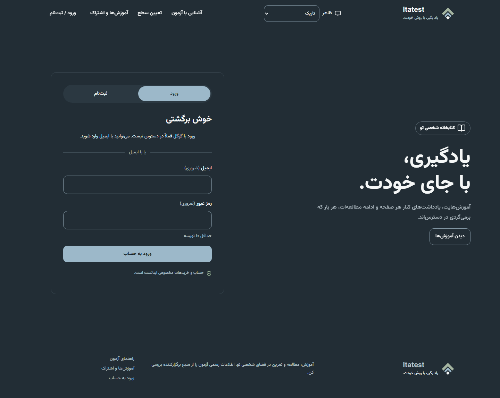
Before — /login · dark · 1440px After — /login · dark · 1440px
After — /login · dark · 1440pxregister light 390 — actual local page
register light 1440 — actual local page
register dark 390 — actual local page
register dark 1440 — actual local page
callback light 390 — actual local page
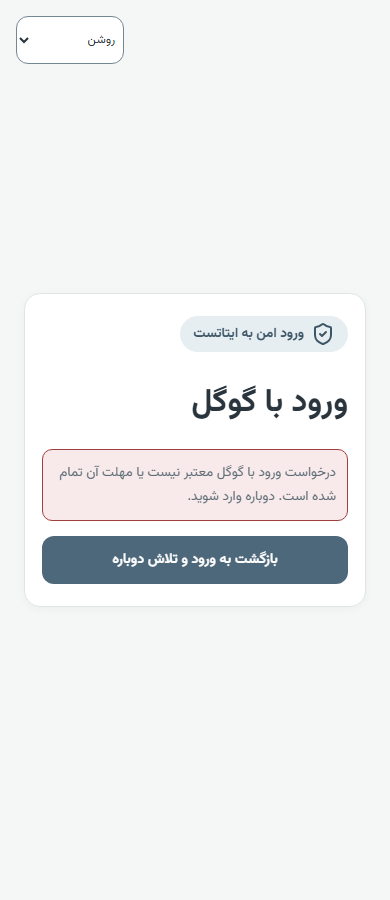
Before — /auth/google/callback?error=access_denied · light · 390px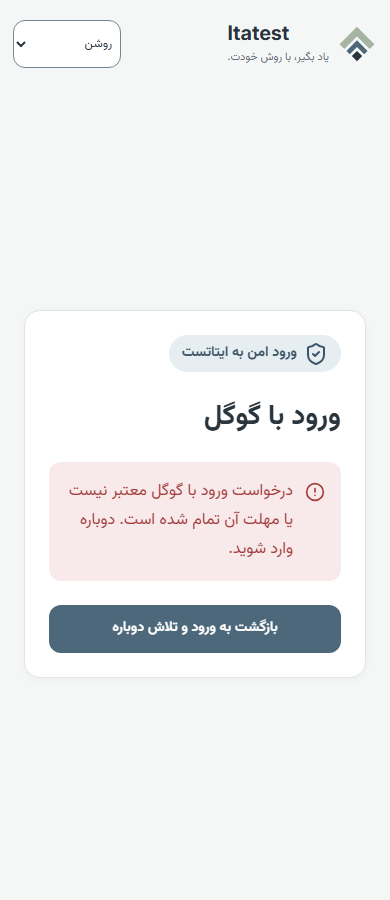
After — /auth/google/callback?error=access_denied · light · 390pxcallback light 1440 — actual local page
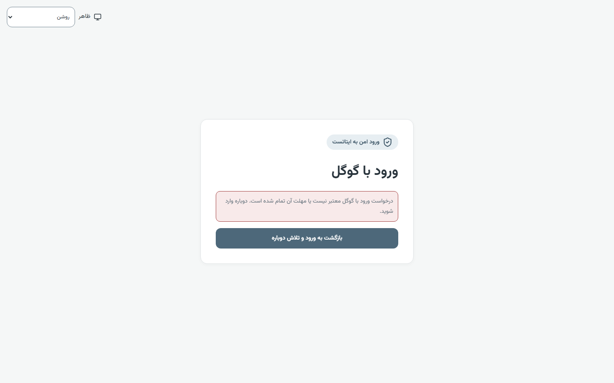
Before — /auth/google/callback?error=access_denied · light · 1440px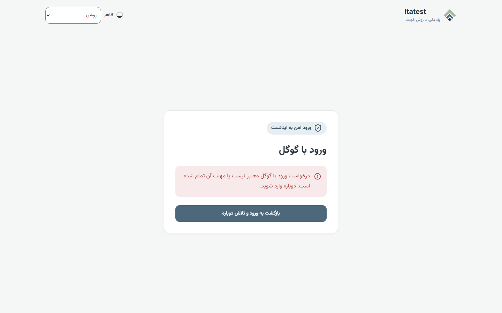
After — /auth/google/callback?error=access_denied · light · 1440pxcallback dark 390 — actual local page
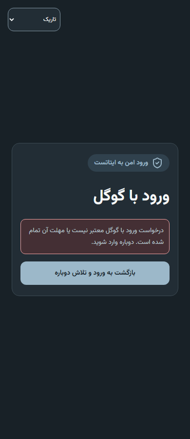
Before — /auth/google/callback?error=access_denied · dark · 390px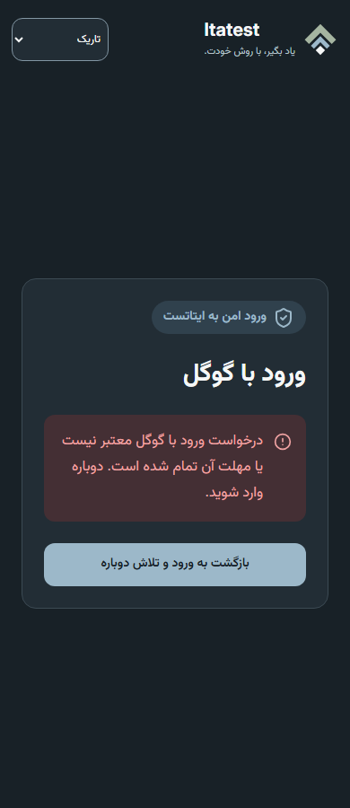
After — /auth/google/callback?error=access_denied · dark · 390pxcallback dark 1440 — actual local page
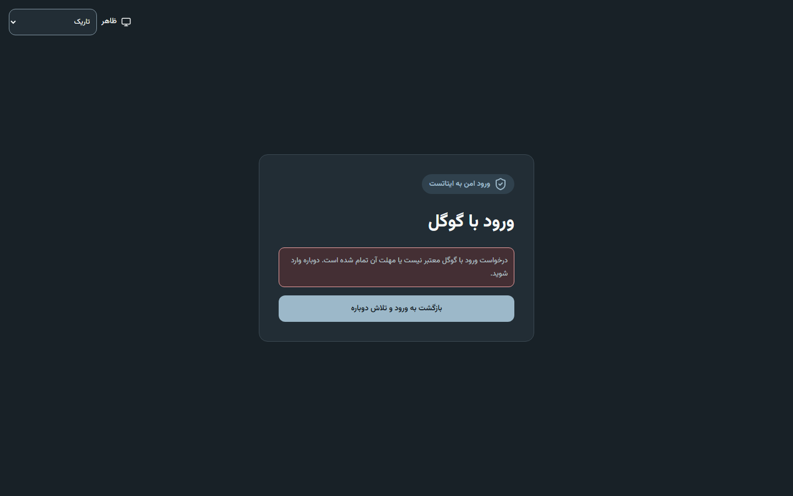
Before — /auth/google/callback?error=access_denied · dark · 1440px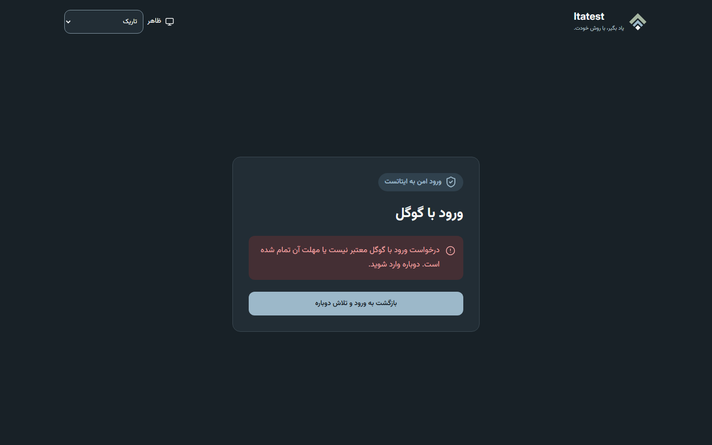
After — /auth/google/callback?error=access_denied · dark · 1440pxnot found light 390 — actual local page
not found light 1440 — actual local page
Before — /missing-page · light · 1440pxAfter — /missing-page · light · 1440px not found dark 390 — actual local page
Before — /missing-page · dark · 390pxAfter — /missing-page · dark · 390px not found dark 1440 — actual local page
Before — /missing-page · dark · 1440pxAfter — /missing-page · dark · 1440px Rendered details & labeled states
hero-light-1440.png — Actual rendered local service; no API response mockexams-light-1440.png — Actual rendered local service; no API response mockfooter-light-1440.png — Actual rendered local service; no API response mockmobile-navigation-light.png — Actual mobile navigation open; local servicehero-dark-1440.png — Actual rendered local service; no API response mockexams-dark-1440.png — Actual rendered local service; no API response mockfooter-dark-1440.png — Actual rendered local service; no API response mockmobile-navigation-dark.png — Actual mobile navigation open; local servicenative-validation-light.png — Actual native invalid email presentation; no requestnative-validation-dark.png — Actual native invalid email presentation; no requestauth-error-light-390.png — Injected HTTP401 synthetic authentication failure; no real credentialauth-error-light-1440.png — Injected HTTP401 synthetic authentication failureresource-error-light.png — Injected HTTP503 curriculum failure; no empty-data fallbackauth-error-dark-390.png — Injected HTTP401 synthetic authentication failure; no real credentialauth-error-dark-1440.png — Injected HTTP401 synthetic authentication failureresource-error-dark.png — Injected HTTP503 curriculum failure; no empty-data fallbackhome-text-200.png — Actual 200% root text sample, 768 CSS pixels, reduced motionshell-catalog-light-390.png — Actual local commerce catalog; shared shell only, workflow unchangedshell-catalog-light-1440.png — Actual local commerce catalog; shared shell only, workflow unchangedshell-catalog-dark-390.png — Actual local commerce catalog; shared shell only, workflow unchangedshell-catalog-dark-1440.png — Actual local commerce catalog; shared shell only, workflow unchangedgoogle-gis-mock-mobile.png — Compiled root; synthetic Google SDK + mocked API; actual app DOM, not real Google UI/signature/FedCMgoogle-code-mock-mobile.png — Compiled root; mock authorization-code flow; no real Google account Verification is representative Chrome automation. Real Google OAuth, external payments and full WCAG/screen-reader compliance remain unverified. Original study-return and math: limitations remain. Source/evidence are local and not deployed.